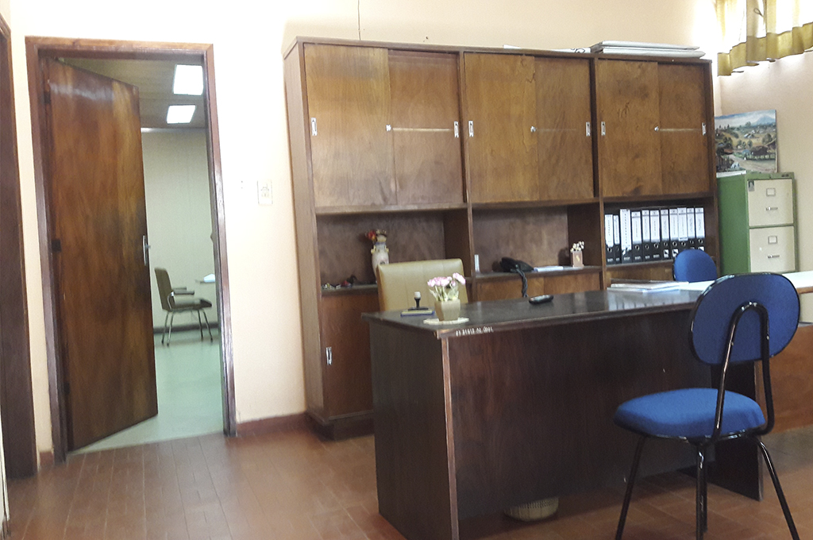
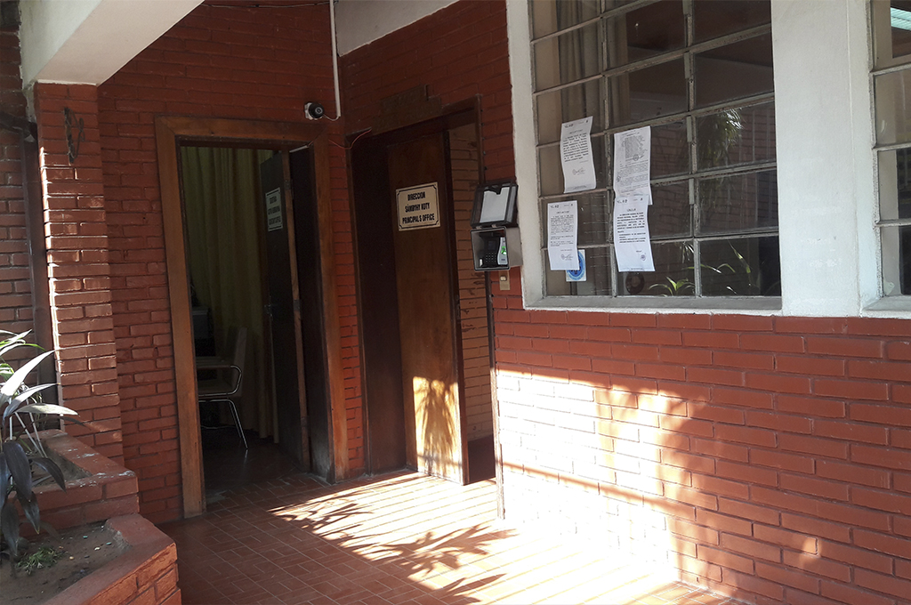

- 
- 
Abog. Alcides Hosffmeister | Director General
El abogado y profesor Hosffmeister tiene 15 años de experiencia y formación docente, ha sido reconocido por apadrinar con excelencia numerosas promociones. Lleva casi una década trabajando arduamente para la Institución y tiene cómo principal función planer, coordinar, supervisar y evaluar todas las actividades del colegio.
ROLES FUNDAMENTALES
La Dirección General del Colegio Técnico Nacional, liderada por el Abog. Alcides Hosffmeister, tiene como roles:
- Ostentar la representación del centro docente, representar a la Administración educativa en el mismo y hacerle llegar a ésta los planteamientos, aspiraciones y necesidades de la comunidad educativa.
Por consiguiente:
a. Dirigir y coordinar todas las actividades del centro docente hacia la consecución del proyecto educativo del mismo.
b. Ejercer la Dirección pedagógica, promover la innovación educativa e impulsar planes para la consecución de los objetivos del proyecto educativo del centro docente.
c. Favorecer la convivencia en el centro docente, garantizar la mediación en la resolución de los conflictos e imponer las medidas disciplinarias que correspondan a los alumnos. - Acentuar el énfasis en materia técnico-pedagógica.
Por consiguiente:
a. Orientar al personal docente en la interpretación de los lineamientos técnicos para el manejo de los programas de estudio.
b. Autorizar las estrategias o sugerencias que le presente el personal docente, para mejorar la aplicación de los programas de estudio de cada grado.
c. Detectar los problemas de actualización y capacitación del personal docente, y canalizarlos hacia el supervisor de zona para su solución cuando ésta no pueda generarse dentro del plantel.
| Turno | Día | Desde | Hasta |
|---|---|---|---|
| Mañana | Martes | 08:00 | 12:00 |
| Tarde | Martes | 13:00 | 15:00 |
| Mañana | Jueves | 13:00 | 15:00 |
| Tarde | Jueves | 13:00 | 15:00 |
Etsy mixtape wayfarers, ethical wes anderson tofu before they sold out mcsweeney's organic lomo retro fanny pack lo-fi farm-to-table readymade. Messenger bag gentrify pitchfork tattooed craft beer, iphone skateboard locavore carles etsy salvia banksy hoodie helvetica. DIY synth PBR banksy irony. Leggings gentrify squid 8-bit cred pitchfork.
Trust fund seitan letterpress, keytar raw denim keffiyeh etsy art party before they sold out master cleanse gluten-free squid scenester freegan cosby sweater. Fanny pack portland seitan DIY, art party locavore wolf cliche high life echo park Austin. Cred vinyl keffiyeh DIY salvia PBR, banh mi before they sold out farm-to-table VHS viral locavore cosby sweater.
Currículum Vitae

El Director General, don Alcides Hosffmeister, cursó sus estudios de grado en la Universidad Nacional de Asunción, obteniendo el título de Abogado de la Facultad de Derecho y Ciencias Sociales. Egresó del Instituto Ateneo de Lengua Guaraní con el título de Prof. de Lengua y Literatura Guaraní. Egresó de la Universidad Católica de Asunción con el título de Licenciado en Filosofía. Se especializó en Notariado y Escribanía Pública por la Universidad Nacional de Asunción. Se formó en Didáctica Media y Superior, así como en Didáctica Universitaria. Actualmente está cursando una maestría en Derecho Civil y Procesal Penal.